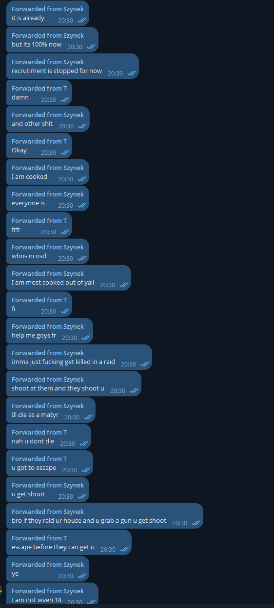
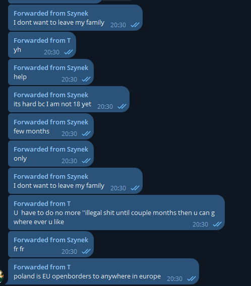

NSD's Star Clown: Szynek
Let’s talk about Szynek, one of NSD's loudest members — and also one of the most paranoid and fragile.
He claims he "got fedded", talks about getting killed in a raid, and constantly begs for help in Telegram chats.


He says things like:
- “Recruitment is stopped”
- “I am cooked”
- “Help me goys fr”
- “Imma just get killed in a raid”
- “I don’t want to leave my family”
- “It’s hard because I am not 18 yet”
This is not a hardened revolutionary — just a scared kid caught up in an internet fantasy.
He talks like he’s in a war movie, but in reality, he’s sitting in his room shaking over imaginary raids.
He admits he’s underage, claims to be hunted by authorities, and still thinks he’s in some kind of resistance movement.
Even funnier, he says:
“Poland is EU, open borders to anywhere in Europe.”
Like running across the EU is going to save him from his own delusions. No, Szynek — this isn’t a spy movie, it’s just Discord LARPing.
NSD is full of people like this — scared, unstable, and disconnected from reality.
They don’t need to be feared — they need to be exposed.